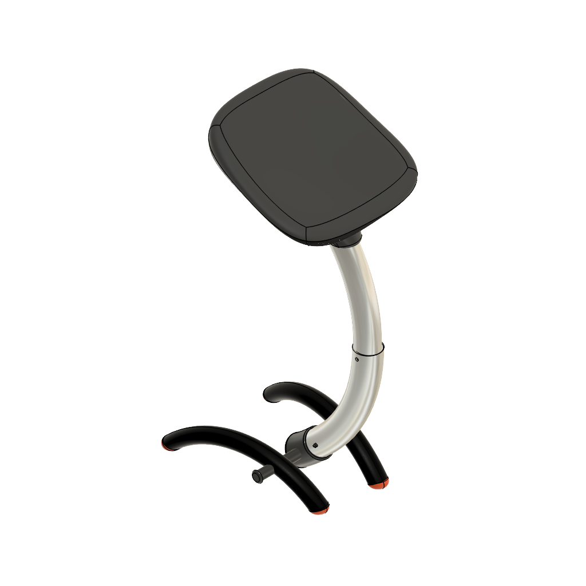
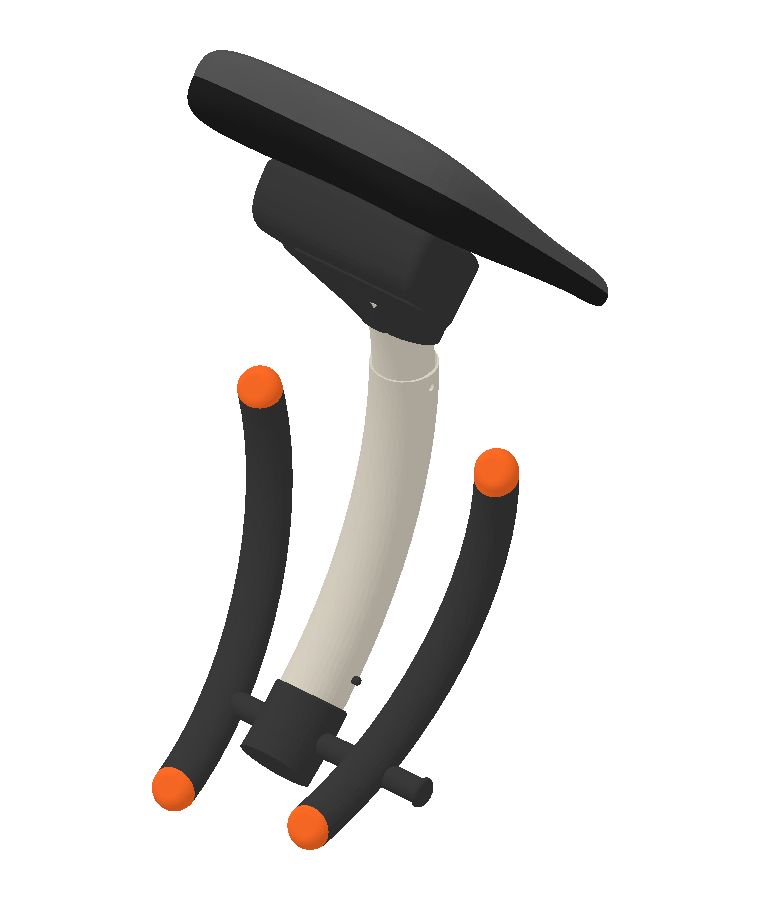

01
Desplegado

Preparando vista interactiva…Arrastrá para girar e inclinar · Usá la rueda para acercar
DISEÑO INDUSTRIAL · PROYECTO ACADÉMICO
Fotografía
deportiva


Materia y decisiones
De la idea al objeto
Texturas, colores y acabados